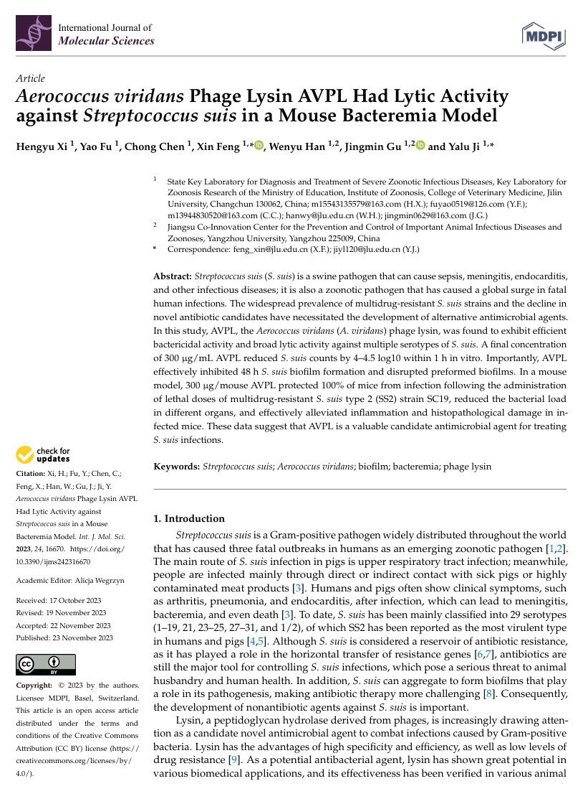

Research Publications
2025
Detection of Staphylococcus aureus via IgY-based immunomagnetic separation and a phage lysin LysGH15-based colloidal gold immunochromatographic assay.
Journal of Advanced Research
2024
Therapeutic efficacy of LysGH15 against necrotising pneumonia caused by Staphylococcus aureus in a rabbit model.
Front Vet Sci
2024
Biological characterization of the phage lysin AVPL and its efficiency against Aerococcus viridans-induced mastitis in a murine model.
Appl Environ Microbiol
2024
A novel phage putative depolymerase, Depo16, has specific activity against K1 capsular-type Klebsiella pneumoniae.
Appl Environ Microbiol
2024
The pig intestinal phageome is an important reservoir and transfer vector for virulence genes.
Science of The Total Environment
2023
Potential of phage EF-N13 as an alternative treatment strategy for mastitis infections caused by multidrug-resistant Enterococcus faecalis.
Journal of Dairy Science
2023
Aerococcus viridans Phage Lysin AVPL Had Lytic Activity against Streptococcus suis in a Mouse Bacteremia Model.
Int. J. Mol. Sci
2023
Structural biology and functional features of phage-derived depolymerase Depo32 on Klebsiella pneumoniae with K2 serotype capsular polysaccharides.
Microbiol Spectr
2023
Metagenomics analysis reveals potential pathways and drivers of piglet gut phage-mediated transfer of ARGs.
Sci Total Environ
2022
A phage cocktail combined with the enteric probiotic Lactobacillus reuteri ameliorated mouse colitis caused by S.typhimurium.
Food Funct
2022
The Combination of Phages and Faecal Microbiota Transplantation Can Effectively Treat Mouse Colitis Caused by Salmonella enterica Serovar Typhimurium.
Front Microbiol
2022
A novel lysin Ply1228 provides efficient protection against Streptococcus suis type 2 infection in a murine bacteremia model.
Vet Microbiol
2022
Rapid and sensitive detection of Staphylococcus aureus using biolayer interferometry technology combined with phage lysin LysGH15.
Biosens Bioelectron
2021
Combination Therapy of Phage vB_KpnM_P-KP2 and Gentamicin Combats Acute Pneumonia Caused by K47 Serotype Klebsiella pneumoniae.
Front. Microbiol
2021
The Phage Holin HolGH15 Exhibits Potential As an Antibacterial Agent to Control Listeria monocytogenes.
Foodborne Pathog Dis
2020
Therapeutic Efficacy of Phage PIZ SAE-01E2 Against Abortion Caused by Salmonella abortus equi in Mice.
Appl Environ Microbiol
2020
Bacteriophage Protects Against Aerococcus viridans Infection in a Murine Mastitis Model.
Front Vet Sci
2020
The Yersinia Phage X1 Administered Orally Efficiently Protects a Murine Chronic Enteritis Model Against Yersinia enterocolitica Infection.
Front. Microbiol.
2019
Three Capsular PolysaccharideSynthesis-RelatedGlucosyltransferases,GT-1, GT-2and WcaJ, Are Associated WithVirulence and Phage Sensitivityof Klebsiella pneumoniae.
Front. Microbiol.
2019
The characteristics and genome analysis of vB_AviM_AVP, the first phage infecting Aerococcus viridans.
Viruses
2019
Preventive effect of the phage VB-SavM-JYL01 on rabbit necrotizing pneumonia caused by Staphylococcus aureus.
Vet Microbiol.
2018
A smooth-type, phage-resistant Klebsiella pneumoniae mutant strain reveals OmpC is indispensable for GH-K3 infection.
Appl Environ Microbiol.
2018
Antibacterial Effects of Phage Lysin LysGH15 on Planktonic Cells and Biofilms of Diverse Staphylococci.
Appl Environ Microbiol.
2018
An Ointment Consisting of the Phage Lysin LysGH15 and Apigenin for Decolonization of Methicillin-Resistant Staphylococcus aureus from Skin Wounds.
Viruses
2017
The Bacteriophage EF-P29 Efficiently Protects against Lethal Vancomycin-Resistant Enterococcus faecalis and Alleviates Gut Microbiota Imbalance in a Murine Bacteremia Model.
Front Microbiol.
2016
LysGH15 kills Staphylococcus aureus without being affected by the humoral immune response or inducing inflammation.
Sci Rep .
2016
Therapeutic effect of Pseudomonas aeruginosa phage YH30 on mink hemorrhagic pneumonia.
Vet Microbiol.
2016
Characterization of Enterococcus faecium bacteriophage IME-EFm5 and its endolysin LysEFm5.
Virology
2015
Combination Therapy of LysGH15 and Apigenin as a New Strategy for Treating Pneumonia Caused by Staphylococcus aureus.
Appl Environ Microbiol.
2014
Structural and biochemical characterization reveals LysGH15 as an unprecedented "EF-hand-like" calcium-binding phage lysin.
PLoS Pathog.
2013
Genomic characterization of lytic Staphylococcus aureus phage GH15: providing new clues to intron shift in phages.
J Gen Virol .
2012
Complete genome sequence of Staphylococcus aureus bacteriophage GH15.
J Virol.
2012
A method for generation phage cocktail with great therapeutic potential.
PLoS One
2011
LysGH15, a novel bacteriophage lysin, protects a murine bacteremia model efficiently against lethal methicillin-resistant Staphylococcus aureus infection.
J Clin Microbiol.